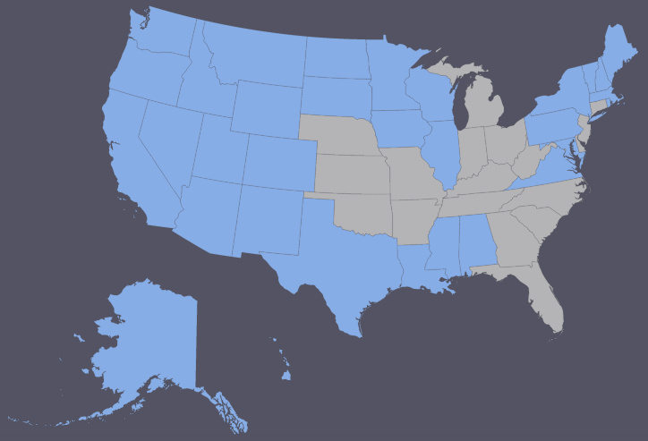
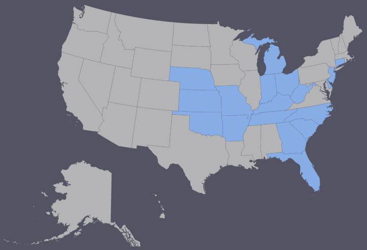

How many states has Molly visited?
You got it! Molly has visited 32 states.
Molly has 18 states left to visit. Where is she going next?
Possibilities:
- Nebraska
- Michigan
- Indiana
- Ohio
- Kentucky
- Oklahoma
- Kansas
- Missouri
- Arkansas
- Georgia
- Florida
- Tennessee
- South Carolina
- North Carolina
- Connecticut
- West Virginia
- Delaware
- New jersey
Thanks for playing! Enjoy your future travels!